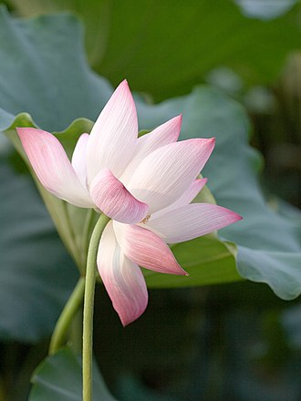
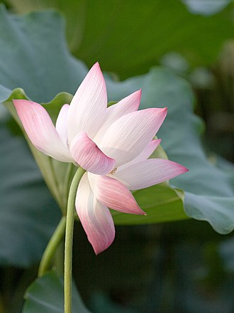
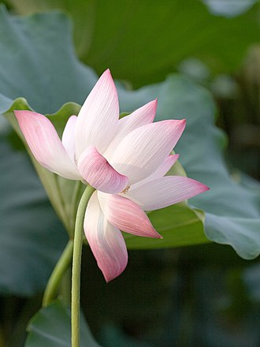

Lotus plants are adapted to grow in the flood plains of slow-moving rivers and delta areas. Stands of lotus drop hundreds of thousands of seeds every year to the bottom of the pond. While some sprout immediately and most are eaten by wildlife, the remaining seeds can remain dormant for an extensive period of time as the pond silts in and dries out. During flood conditions, sediments containing these seeds are broken open, and the dormant seeds rehydrate and begin a new lotus colony.
It has a very wide native distribution, ranging from central and northern India (at altitudes up to 1,400 m or 4,600 ft in the southern Himalayas[4]), through northern Indochina and East Asia (north to the Amur region; the Russian populations have sometimes been referred to as "Nelumbo komarovii"), with isolated locations at the Caspian Sea.[5] Today, the species also occurs in southern India, Sri Lanka, virtually all of Southeast Asia, New Guinea, and northern and eastern Australia, but this is probably the result of human translocations.[5] It has a very long history (c. 3,000 years) of being cultivated for its edible seeds[5] and is commonly cultivated in water gardens.[4] It is the national flower of India and Vietnam.
